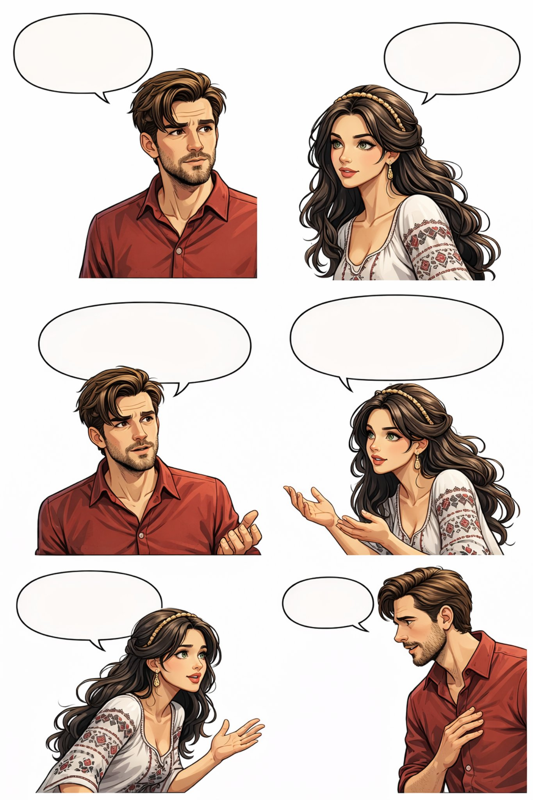

Поглавље 2: Тајна Београда
Página individual del capítulo con lectura y ejercicios.


Луис и Наташа седе у парку. Сунце залази. Наташа гледа у реку.
"Луис, желим да ти кажем нешто," каже Наташа.
"Шта је то?" пита Луис.
"Београд има тајну," каже Наташа. "Има једна стара легенда. Легенда каже да је Београд град са две душе. Једна душа је добра, а друга је дивља. Када је ноћ, дивља душа буди град. Зато је Београд увек жив ноћу."
Луис слуша пажљиво. "То је интересантно," каже он. "Волим легенде."
Наташа се смеје. "И ја волим легенде. Али ово није само легенда. То је магија Београда."
Луис гледа Наташу. Он је срећан. Он каже: "Наташа, хоћеш да вечераш са мном? Желим да проведем више времена са тобом."
Наташа се осмехне. "Да, хоћу. Хвала."
Луис је срећан. Он каже: "Волим да цртам. Цртам градове и људе."
"Заиста?" пита Наташа. "Можеш ли да ми покажеш своје цртеже?"
Луис се смеје. "Обећавам. Показаћу ти их на вечери."
Наташа је задовољна. Она каже: "Не могу да чекам."
Крај другог поглавља.
¡Excelente! Aquí tienes el material para el Capítulo 2, con nuevo vocabulario, un punto gramatical clave y nuevos ejercicios.
📚 Lista de Vocabulario Útil - Capítulo 2 📚
🧠 Conceptos y Sustantivos:
- Тајна - Secreto 🤫
- Легенда - Leyenda 🏺
- Душа - Alma 💖
- Ноћ - Noche 🌙
- Магија - Magia 🧙♀️
- Време - Tiempo ⏳
- Цртеж - Dibujo 🎨 (Pl. Цртежи)
- Свеска - Cuaderno 📓
- Уметник - Artista 🎨
- Инспирација - Inspiración 💡
- Портрет - Retrato 🖼️
- Сан - Sueño 💤
- Дар - Don / Talento 🎁
- Будућност - Futuro 🔮
- Оловка - Lápiz ✏️
- Венера - Venus (diosa) 👸
💬 Verbos y Acciones:
- Кажем - Digo 🗣️
- Слуша - Escucha 👂
- Буди - Despierta 🛏️
- Волим - Amo / Me gusta ❤️
- Желим - Quiero 🎯
- Покажеш - Muestras 👉
- Обећавам - Prometo 🤞
- Цртам - Dibujo ✏️
- Не могу да чекам - No puedo esperar 😊
🌈 Adjetivos y Descripciones:
- Стара - Vieja / Antigua 🕰️
- Добра - Buena 😇
- Дивља - Salvaje 🐺
- Интересантно - Interesante 🤔
- Заиста - ¿De verdad? 😲
- Задовољна - Contento / Satisfecha 😊
- Посебан - Especial ✨
📘 Gramática Básica: El Caso Acusativo para Objetos Directos 📘
En serbio, cuando un sustantivo es el objeto directo de la acción (respuesta a ¿Qué? o ¿A quién?), a menudo cambia su terminación. Esto se llama Acusativo.
Regla para Sustantivos Femeninos (terminados en -a)
- En Nominativo (sujeto): -a
- En Acusativo (objeto): -u
Ejemplos del texto:
- Nominativo: Легенда каже... (La leyenda dice...)
- Acusativo: Волим легенду. (Amo la leyenda).
- Nominativo: Наташа гледа... (Natasha mira...)
- Acusativo: Видим Наташу. (Veo a Natasha).
Regla para Sustantivos Masculinos (seres animados)
- En Nominativo: -
- En Acusativo: -a
Ejemplo:
- Nominativo: Луис слуша. (Luis escucha).
- Acusativo: Видим Луиса. (Veo a Luis).
(Nota: Los masculinos inanimados y los neutros a menudo no cambian en acusativo singular, pero eso lo veremos más adelante).
✍️ Ejercicios de Práctica - Capítulo 2 ✍️
Ejercicio 1: Traducción Sencilla
Traduce estas frases del Capítulo 2 al español.
1. Београд има тајну.
2. Волим легенде.
3. Желим да проведем више времена са тобом.
4. Луис црта градове и људе.
5. Не могу да чекам.
1. Belgrado tiene un secreto.
2. Me gustan las leyendas / Amo las leyendas.
3. Quiero pasar más tiempo contigo.
4. Luis dibuja ciudades y personas.
5. No puedo esperar.
Ejercicio 2: Identifica el Caso
Indica si el sustantivo en negrita está en Nominativo (sujeto) o Acusativo (objeto directo).
1. Наташа гледа Луиса.
2. Луис слуша Наташу.
3. Легенда је стара.
4. Волим магију.
5. Луис црта портрет.
1. Наташа - Nominativo
2. Наташу - Acusativo
3. Легенда - Nominativo
4. Магију - Acusativo
5. Луис - Nominativo
Ejercicio 3: Conjugación de Verbos
Conjuga el verbo ВОЛИТИ (Amar / Gustar) en presente.
Ejercicio 4: Forma tu propia frase
Usa el vocabulario y la gramática de hoy. Escribe una frase usando un sustantivo en Acusativo.
Ejemplo: Волим Београд. (Amo Belgrado). -> "Београд" está en Acusativo.
Tu frase: _________________________________